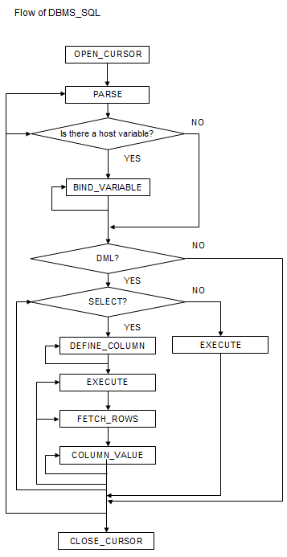

Dynamic SQL can be executed from PL/pgSQL.
Feature | Description |
|---|---|
BIND_VARIABLE | Sets values in the host variable within the SQL statement. |
CLOSE_CURSOR | Closes the cursor. |
COLUMN_VALUE | Retrieves the value of the column in the select list extracted with FETCH_ROWS. |
DEFINE_COLUMN | Defines the column from which values are extracted and the storage destination. |
EXECUTE | Executes SQL statements. |
FETCH_ROWS | Positions the specified cursor at the next row and extracts values from the row. |
OPEN_CURSOR | Opens a new cursor. |
PARSE | Parses SQL statements. |
Note
In DBMS_SQL, the data types supported in dynamic SQL are limited, and therefore the user must consider this. The supported data types are:
INTEGER
DECIMAL
NUMERIC
REAL
DOUBLE PRECISION
CHAR*1
VARCHAR*1
NCHAR*1
NCHAR VARYING*1
TEXT
DATE
TIMESTAMP WITHOUT TIME ZONE
TIMESTAMP WITH TIME ZONE
INTERVAL*2
SMALLINT
BIGINT
*1:
The host variables with CHAR, VARCHAR, NCHAR, and NCHAR VARYING data types are treated as TEXT, to match the string function arguments and return values. Refer to "String Functions and Operators" in "Functions and Operators" in "The SQL Language" in the PostgreSQL Documentation for information on string functions.
When specifying the arguments of the features compatible with Oracle databases NVL and/or DECODE, use CAST to convert the data types of the host variables to ensure that data types between arguments are the same.
*2:
When using COLUMN_VALUE to obtain an INTERVAL type value specified in the select list, use an INTERVAL type variable with a wide range such as when no interval qualifier is specified, or with a range that matches that of the variable in the select list. If an interval qualifier variable with a narrow range is specified, then the value within the interval qualifier range will be obtained, but an error that the values outside the range have been truncated will not occur.
Example
This example illustrates where a value expression that returns an INTERVAL value is set in the select list and the result is received with COLUMN_VALUE. Note that the SQL statement operation result returns a value within the INTERVAL DAY TO SECOND range.
[Bad example]
Values of MINUTE, and those after MINUTE, are truncated, because the variable(v_interval) is INTERVAL DAY TO HOUR.
v_interval INTERVAL DAY TO HOUR;... PERFORM DBMS_SQL.PARSE(cursor, 'SELECT CURRENT_TIMESTAMP - ''2010-01-01'' FROM DUAL', 1);... SELECT value INTO v_interval FROM DBMS_SQL.COLUMN_VALUE(cursor, 1, v_interval); result:1324 days 09:00:00[Good example]
By ensuring that the variable(v_interval) is INTERVAL, the values are received correctly.
v_interval INTERVAL;... PERFORM DBMS_SQL.PARSE(cursor, 'SELECT CURRENT_TIMESTAMP - ''2010-01-01'' FROM DUAL', 1);... SELECT value INTO v_interval FROM DBMS_SQL.COLUMN_VALUE(cursor, 1, v_interval); result:1324 days 09:04:37.530623{ BIND_VARIABLE(cursor, varName, val [, len ])| CLOSE_CURSOR(cursor)| COLUMN_VALUE(cursor, colPos, varName)| DEFINE_COLUMN(cursor, colPos, varName [, len ])| EXECUTE(cursor)| FETCH_ROWS(cursor)| OPEN_CURSOR([parm1 ])| PARSE(cursor, sqlStmt, parm1 [, parm2, parm3, parm4 ]) }This section explains each feature of DBMS_SQL.
BIND_VARIABLE sets values in the host variable within the SQL statement.
Specify the cursor number to be processed.
Specify the name of the host variable within the SQL statement using a string for the host variable name.
Specify the value set in the host variable. The data type of the host variable is the same as that of the value expression - it is implicitly converted in accordance with its position within the SQL statement. Refer to "A.3 Implicit Data Type Conversions" for information on implicit conversions.
If the value is a character type, the string length is the number of characters. If the string length is not specified, the size is the total length of the string.
It is necessary to place a colon at the beginning of the host variable in SQL statements to identify the host variable. The colon does not have to be added to the host variable names specified at BIND_VARIABLE. The following shows examples of host variable names specified with SQL statements and host variable names specified with BIND_VARIABLE:
PERFORM DBMS_SQL.PARSE(cursor, 'SELECT emp_name FROM emp WHERE sal > :x', 1);
In this example, BIND_VARIABLE will be as follows:
PERFORM DBMS_SQL.BIND_VARIABLE(cursor, ':x', 3500);
Or,
PERFORM DBMS_SQL.BIND_VARIABLE(cursor, 'x', 3500);
The length of the host variable name can be up to 30 bytes (excluding colons).
If the data type of the set value is string, specify the effective size of the column value as the fourth argument.
Example
If the data type of the value to be set is not a string:
PERFORM DBMS_SQL.BIND_VARIABLE(cursor, ':NO', 1);
If the data type of the value to be set is a string:
PERFORM DBMS_SQL.BIND_VARIABLE(cursor, ':NAME', h_memid, 5);
CLOSE_CURSOR closes the cursor.
Specify the cursor number to be processed.
The value returned is a NULL value.
Example
cursor := DBMS_SQL.CLOSE_CURSOR(cursor);
COLUMN_VALUE retrieves the value of the column in the select list extracted with FETCH_ROWS.
Specify the cursor number to be processed.
Specify the position of the column of the select list in the SELECT statement. The position of the first column is 1.
Specify the destination variable name.
Use a SELECT statement to obtain the values of the value, column_error, and actual_length columns.
The value column returns the value of the column specified at the column position. The data type of the variable name must match that of the column. If the data type of the column in the SELECT statement specified in PARSE is not compatible with DBMS_SQL, use CAST to convert to a compatible data type.
The data type of the column_error column is NUMERIC. If the column value could not be set correctly in the value column, a value other than 0 will be returned:
22001: The extracted string has been truncated
22002: The extracted value contains a NULL value
The data type of the actual_length column is INTEGER. If the extracted value is a character type, the number of characters will be returned (if the value was truncated, the number of characters prior to the truncation will be returned), otherwise, the number of bytes will be returned.
Example
When retrieving the value of the column, the error code, and the actual length of the column value:
SELECT value, column_error, actual_length INTO v_memid, v_col_err, v_act_len FROM DBMS_SQL.COLUMN_VALUE(cursor, 1, v_memid);
When retrieving just the value of the column:
SELECT value INTO v_memid FROM DBMS_SQL.COLUMN_VALUE(cursor, 1, v_memid);
DEFINE_COLUMN defines the column from which values are extracted and the storage destination.
Specify the cursor number to be processed.
Specify the position of the column in the select list in the SELECT statement. The position of the first column is 1.
Specify the destination variable name. The data type should be match with the data type of the column from which the value is to be extracted. If the data type of the column in the SELECT statement specified in PARSE is not compatible with DBMS_SQL, use CAST to convert to a compatible data type.
Specify the maximum number of characters of character type column values.
If the data type of the column value is string, specify the effective size of the column value as the fourth argument.
Example
When the data type of the column value is not a string:
PERFORM DBMS_SQL.DEFINE_COLUMN(cursor, 1, v_memid);
When the data type of the column value is a string:
PERFORM DBMS_SQL.DEFINE_COLUMN(cursor, 1, v_memid, 10);
EXECUTE executes SQL statements.
Specify the cursor number to be processed.
The return value is an INTEGER type, is valid only with INSERT statement, UPDATE statement, and DELETE statement, and is the number of rows processed. Anything else is invalid.
Example
ret := DBMS_SQL.EXECUTE(cursor);
FETCH_ROWS positions at the next row and extracts values from the row.
Specify the cursor number to be processed.
The return value is an INTEGER type and is the number of rows extracted. 0 is returned if all are extracted.
The extracted information is retrieved with COLUMN_VALUE.
Example
LOOP IF DBMS_SQL.FETCH_ROWS(cursor) = 0 THEN EXIT; END IF;...END LOOP;
OPEN_CURSOR opens a new cursor.
The parameter is used for compatibility with Oracle databases only, and is ignored by FUJITSU Enterprise Postgres. An INTEGER type can be specified, but it will be ignored. If migrating from an Oracle database, specify 1.
Close unnecessary cursors by executing CLOSE_CURSOR.
The return value is an INTEGER type and is the cursor number.
Example
cursor := DBMS_SQL.OPEN_CURSOR();
PARSE analyzes dynamic SQL statements.
Specify the cursor number to be processed.
Specify the SQL statement to be parsed.
Parameters 1, 2, 3, and 4 are used for compatibility with Oracle databases only, and are ignored by FUJITSU Enterprise Postgres. If you are specifying values anyway, specify the following:
- Parameter 1 is an INTEGER type. Specify 1.
- Parameters 2 and 3 are TEXT types. Specify NULL.
- Parameter 4 is a BOOLEAN type. Specify TRUE.
If migrating from an Oracle database, the specified values for parameters 2, 3, and 4 do not need to be changed.
Add a colon to the beginning of host variables in SQL statements.
The DDL statement is executed when PARSE is issued. EXECUTE is not required for the DDL statement.
If PARSE is called again for opened cursors, the content in the data regions within the cursors is reset, and the SQL statement is parsed anew.
Example
PERFORM DBMS_SQL.PARSE(cursor, 'SELECT memid, memnm FROM member WHERE memid = :NO', 1);
This section explains the flow of DBMS_SQL and provides an example.
Flow of DBMS_SQL

Example
CREATE FUNCTION smp_00()RETURNS INTEGERAS $$DECLARE str_sql VARCHAR(255); cursor INTEGER; h_smpid INTEGER; v_smpid INTEGER; v_smpnm VARCHAR(20); v_smpage INTEGER; errcd INTEGER; length INTEGER; ret INTEGER;BEGIN str_sql := 'SELECT smpid, smpnm, smpage FROM smp_tbl WHERE smpid < :H_SMPID ORDER BY smpid'; h_smpid := 3; v_smpid := 0; v_smpnm := ''; v_smpage := 0; cursor := DBMS_SQL.OPEN_CURSOR(); PERFORM DBMS_SQL.PARSE(cursor, str_sql, 1); PERFORM DBMS_SQL.BIND_VARIABLE(cursor, ':H_SMPID', h_smpid); PERFORM DBMS_SQL.DEFINE_COLUMN(cursor, 1, v_smpid); PERFORM DBMS_SQL.DEFINE_COLUMN(cursor, 2, v_smpnm, 10); PERFORM DBMS_SQL.DEFINE_COLUMN(cursor, 3, v_smpage); ret := DBMS_SQL.EXECUTE(cursor); loop if DBMS_SQL.FETCH_ROWS(cursor) = 0 then EXIT; end if; SELECT value,column_error,actual_length INTO v_smpid,errcd,length FROM DBMS_SQL.COLUMN_VALUE(cursor, 1, v_smpid); RAISE NOTICE '--------------------------------------------------------'; RAISE NOTICE '--------------------------------------------------------'; RAISE NOTICE 'smpid = %', v_smpid; RAISE NOTICE 'errcd = %', errcd; RAISE NOTICE 'length = %', length; SELECT value,column_error,actual_length INTO v_smpnm,errcd,length FROM DBMS_SQL.COLUMN_VALUE(cursor, 2, v_smpnm); RAISE NOTICE '--------------------------------------------------------'; RAISE NOTICE 'smpnm = %', v_smpnm; RAISE NOTICE 'errcd = %', errcd; RAISE NOTICE 'length = %', length; select value,column_error,actual_length INTO v_smpage,errcd,length FROM DBMS_SQL.COLUMN_VALUE(cursor, 3, v_smpage); RAISE NOTICE '--------------------------------------------------------'; RAISE NOTICE 'smpage = %', v_smpage; RAISE NOTICE 'errcd = %', errcd; RAISE NOTICE 'length = %', length; RAISE NOTICE ''; end loop; cursor := DBMS_SQL.CLOSE_CURSOR(cursor); RETURN 0;END;$$ LANGUAGE plpgsql;